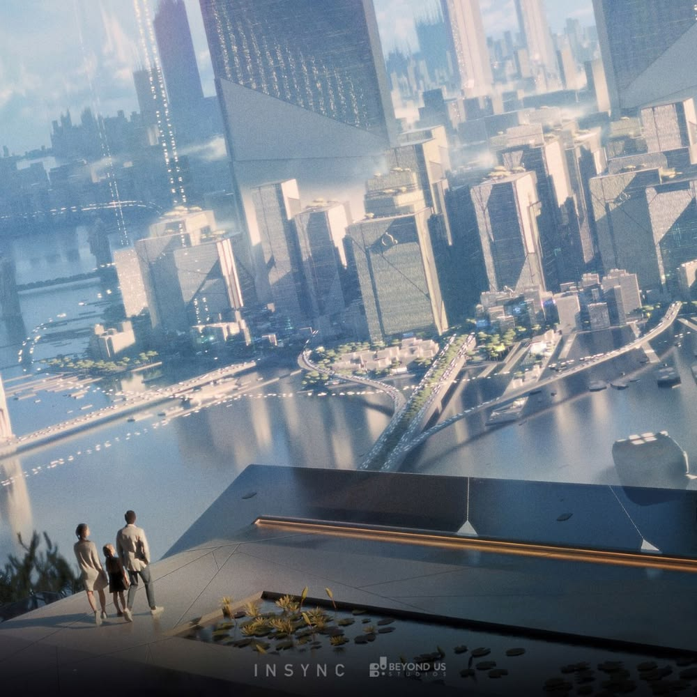

阿里斯实验室
阿里斯实验室是 GenSphere 旗下的前沿研究部门，聚焦于世界模型、物理仿真、多模态生成与长期记忆架构等基础方向的探索。我们的目标，是让人工智能不仅能够理解语言和图像，更能够理解空间、时间、因果与物理规律——从而真正构建出可以持续运行、持续演化的虚拟世界。
实验室的研究成果将直接转化为 GenSphere 产品的底层能力，同时我们也会以开放的态度，与学术界和产业界保持紧密合作，共同推动这一领域的发展。


